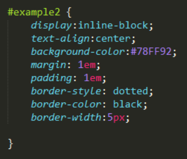
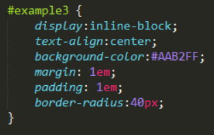
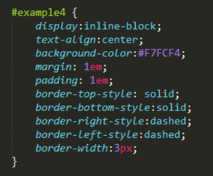
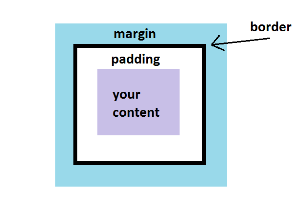
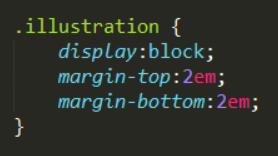

Week 3
Margin, Border, and Padding in CSS
11/09/2015
Using CSS (Cascading Style Sheets) to space things out the way you want them to be can be tricky! In order to get the website look you want, it's important to understand margin, border, and padding.
Let's back up just a little first. Your webpage is essentially made up of boxes. These boxes may be something like an image. They could be divisions you made in the HTML, like divs or a sections. But everything on your page more or less exists in a box.
These boxes have 3 properties that decide how the boxes around them look and are distance from other boxes on the page: margin, border, and padding. The first one I'm going to introduce, though it sits between the other two, is border. I found that when I was learning about margin, border, and padding, border was the hardest to understand but once it "clicked" everything else fell into place.
A border is what defines the edge of an element that is to say, the visible box. It is outside the content, but borders it, hence the name. The tricky thing about borders is that they are by default, invisible. In fact they have the border-style of none. So if you're not thinking about borders, it's easy to get confused, because by default it looks like they're not even there!
Of course even an invisible border becomes visible when there's a difference between the inside of the element and the outside. Let's take for example a div that has a different background color. Where that color ends, and the rest of the page begins, that's the border!
If you do want a defined border around your content that's easy enough. Just go into your stylesheet and set the border-style to solid. There are other things you can do with borders too: make them dotted, dashed, double. You can set the top, right, left, and bottom borders seperately too. For more information on what sorts of borders you can make, check out this lesson from w3schools.com. You can change the color of a border with border-color and the thickness of a border with border-width. Again, these can be set seperately for each side of the box. Borders can also be rounded off with the border-radius property where 0 (not rounded) is the default. Border-radius can be set seperately for each corner to make interesting shapes out of of your element. For some tips on using border-radius check out CSS Tricks' lesson on the subject.
  
Now that we understand where the border sits and what it can look (or not look) like, we can talk about margin and padding. These concepts are fairly simple once we understand the border. Basically, the padding is the empty space that sits between the content and the border, and the margin is the empty space that sits between the border and the other elements on the page or the edge of the page.

The only thing we've done with margin and padding is change how big they are. That's simple enough: you can change the margin and padding to any value you want in px (pixels), % (percentage of the page), or em (a value equal to the default text size in pixels). And as you might expect, you can set values for top, bottom, left and right separately.For example, the above diagram about how the margin and padding works has top and bottom margins like so...

You can also set margin to auto to center things on the page.
So in summary...
- The padding defines the space between the content and the border.
- The border defines the edge of an element, and may be invisible.
- The margin defines the space between the element and other elements or the edge of the page
I hope you enjoyed my second blog post about what I learned at DBC!